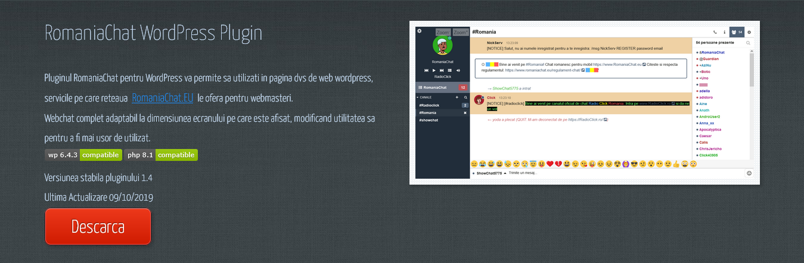
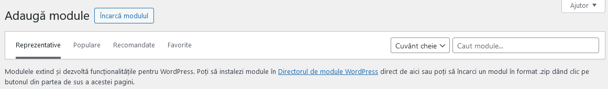
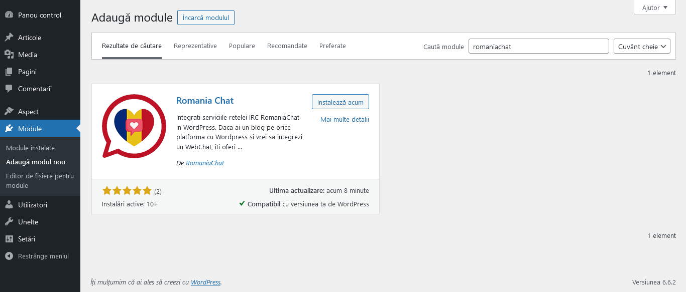
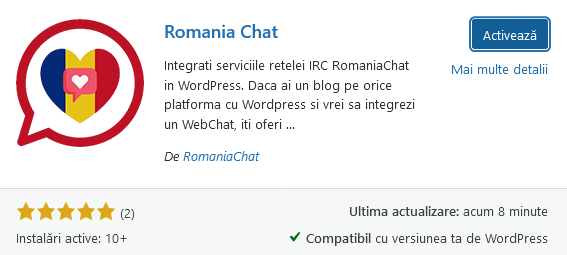
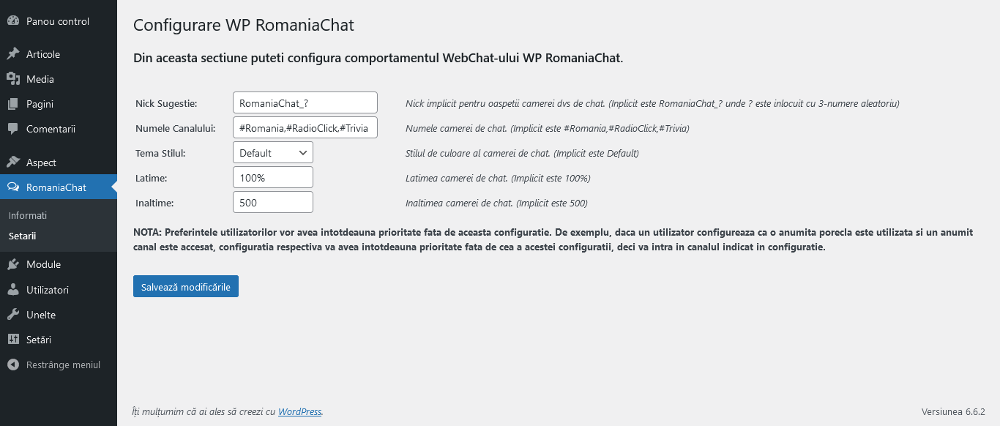
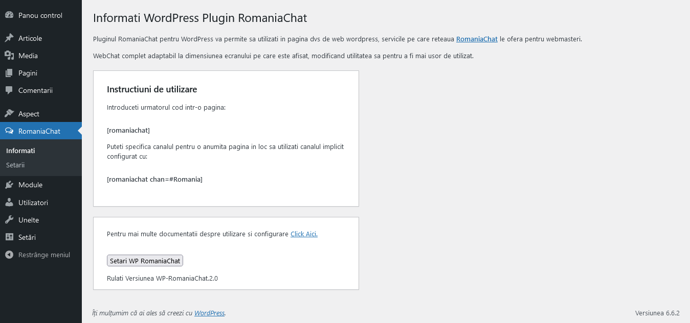

WP RomaniaChat
Integrati serviciile retelei IRC RomaniaChat in WordPress

Integrati serviciile retelei IRC RomaniaChat in WordPress
Daca ai un blog pe orice platforma cu Wordpress si vrei sa integrezi un webchat, iti oferim solutia perfecta.
Am dezvoltat un plugin nativ de chat pentru WordPress pe care îl poți instala din magazinul de pluginuri al platformei pentru a avea chat gratuit pe blogul tău.
Una dintre cele mai frecvente probleme atunci când doriți să oferiți o experiență IRC bună utilizatorilor site-ului dvs. web este existența unor limitări majore în aplicațiile existente. Limitări, de la incapacitatea de a conecta mai mulți utilizatori fără a plăti pentru o versiune „Premium” sau necesitatea de a vă înregistra în sisteme terțe pentru a accesa conversațiile online.
Pluginul WP RomaniaChat vine să acopere aceste nevoi și multe altele. Oferim, o aplicație de chat care poate fi integrată în orice pagină web cu Wordpress, fie într-o intrare, fie pe o pagină prin adăugarea unui cod simplu și accesarea unui canal sau cameră existentă sau creând unul nou pentru ocazie, astfel încât utilizatorii să poată discuta fără probleme.
Instalare
Folosind FTP sau similar
Dezarhivați wp-romaniachat și Încărcați dosarul wp-romaniachat în directorul /wp-content/plugins/
Activati plugin-ul in sectiunea Plugin-uri din panoul administrativ al Wordpress.
Configurati toate optiunile.
Introduceti in pagina unde dorti sa apara chat-ul urmatorul (shortcode) cod scurt: [romaniachat]
Puteți specifica un canal pentru o anumită pagină în loc să utilizați canalul implicit configurat cu: [romaniachat chan=#Romania]
Instalare Recomandata
Din tabloul de bord (administrator WordPress)
- 1. Accesati „Plugins” (Module in limba romana)
- 2. Click pe “Add New” (Adăuga modul nou)
- 3. Gaseste plugin-ul prin cautare:
- Cauta modul: RomaniaChat
- 
- 4. Instaleaza pluginul
- 
- Click pe butonul „Install now” (instaleaza acum). Cand faci acest lucru, WordPress va prelua pluginul si il va instala pe site-ul tau.
- 5. Activati pluginul
- Acesta este ultimul pas. Dupa finalizarea instalarii, dai click pe link-ul „Activate” (Activeaza) care tocmai a aparut:
- 
Configurare
Configurati toate optiunile:
- 
Introduceti in pagina unde dorti sa apara chat-ul urmatorul (shortcode) cod scurt: [romaniachat]
Puteți specifica un canal pentru o anumită pagină în loc să utilizați canalul implicit configurat cu: [romaniachat chan=#Romania]
- 
imagini tema


Contribuie
Contribuie in accest proiect
Rapoartele de erori și solicitările de extragere sunt binevenite pe GitHub
Dacă găsiți erori sau doriți să îmbunătățiți unele părți ale pluginului, puteți face acest lucru deschizând o problemă sau o solicitare de extragere
Obținerea de context
Înainte de a face orice, realizează o verificare rapidă să te asiguri că ideea ta nu a fost discutată altundeva. Răsfoiește README-ul proiectului, problemele (deschise și închise).
Dacă nu-ți poți găsi ideea altundeva, ești pregătit să faci o mutare, proiectul este pe GitHub, probabil vei comunica deschizând o problemă sau o cerere de pull:
Deschiderea unei cereri de pull request
Ar trebui de obicei să deschideți o cerere de pull în următoarele situații:
Trimiți corectări simple (de exemplu, o greșeală gramaticală, un link nefuncțional sau o eroare evidentă)
Începi lucrul pe o contribuție care a fost deja cerută, sau pe care ați discutat-o deja, într-o problemă
O cerere de pull nu trebuie să reprezinte muncă finalizată. Este de obicei mai bine să deschizi o cerere de pull mai devreme, astfel încât alții pot să urmărească sau să ofere feedback asupra progresului tău. Poți întotdeauna adăuga mai multe commit-uri mai târziu.
Pentru comunicare ușoară, cum ar fi o întrebare clarificatoare sau de tip cum-să, încercați să întrebați pe IRC
Ajutor - Faq
- La revedere qwebirc Bun venit kiwiirc
- Ne luam ramas bun de la versiunea pluginului 1.x bazat pe qwebirc si continuam cu o noua versiune 2.x bazat pe kiwiirc
- mai multe informații Citiți aici
- Da deoarece versiunea 1.x nu functioneaza corect cu versiune noua wordpress.
- Pluginurile învechite (neactualizate) fac site-ul dvs. vulnerabil la atacuri și creează o oportunitate pentru hackeri de a vă încălca WordPress.
- Ai ceva de zis? Ai nevoie de ajutor? Vezi forumul pentru suport
- Nu gasesti nici un raspuns pe forumul de support?
- Contactează-ne prin pagina noastra de Contact la sectiunea WP Plugin RomaniaChat